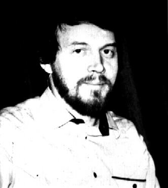

Научные труды К.П. Иванова
|  | Автору этих научных работ - Константину
Павловичу Иванову (26.06.1953≈19.12.1992), кандидату
географических наук, старшему научному
сотруднику НИИ географии (НИИГ)
Санкт-Петербургского университета,
действительному члену Русского географического
общества - не суждено увидеть свой труд,
воплощенный в книгу. В ночь на 19 декабря 1992 г. рука
убийцы злодейски прервала его земную жизнь,
остановила творческую мысль молодого ученого.
Это дикое преступление произошло на пороге дома,
где его ждали любимые жена и дети. Шестеро детей
лишились отца. Овдовела жена. Родители потеряли
сына. У России отняли талантливого, оригинально
мыслящего человека, православного патриота. Он умел зажечь людей своей энергией, своими идеями, мог повести за собой. Перед ним открывалось блестящее научное будущее, что подтверждает и представляемая вниманию читателя книга, составленная нами - ближайшими коллегами, соратниками и друзьями - на основе опубликованных статей, докладов и отчасти рукописных материалов.
|
 Научные труды
Научные труды "Проблемы
этнической географии" - монография
"Проблемы
этнической географии" - монография- "Этносфера
и космос" - совместная статья с Л.Н. Гумилёвым
- "Классификация
людей по пассионарно-аттрактивному принципу"
- совместная работа с Л.Н. Гумилёвым
- "В
гостях у Льва Гумилёва" (11/11/01)
-
"Этнос:
категория или бытие?" (26/06/07)
- Работа относящаяся к концу 80-х гг. XX
в..
опубликовано // Учение Л. Н. Гумилева и современность : Материалы междунар. конф., посвящ. 90-летию со дня рождения Л. Н. Гумелева, проводимой в рамках Программы: 300-летик Санкт-Петербурга / [Гл. ред.: Л. А. Вербицкая]. - СПб. : НИИХ СПбГУ, 2002.
Славянские ль ручьи
сольются в Русском море? (21/10/04)
- Л. Н. Гумилев ведет беседу с А. М.
Панченко и К. П. Ивановым.
опубликовано // Литературная учеба, 1992, ╧6 (ноябрь-декабрь).
"Механизм
этногенеза как инструмент исследования
этнокультура" - статья - Работа относящаяся к концу 80-х гг. XX
в..
- "Слово
об Учителе" - выступление на
гражданской панихиде Л.Н. Гумилева (1992 г.) (2/03/04)
- Значение
теории Л. Н. Гумилёва для изучения малочисленных
народов Севера России (в соавторстве
с С. А. Хрущевым).
- Работа относящаяся к концу 80-х гг. XX
в..
Опубликовано // Вторые Гумилёвские чтения "Учение Л.Н. Гумилёва: Опыт осмысления" (г. Москва, 2-4 июня 1998 г.) - Основные направления и задачи
этнологических исследований (1992 г.) (3/06/04)
- Этнические процессы: два подхода к изучению (написана в соавторстве с
Л. Н. Гумилёвым) (19/12/10)
- Опубликовано // Социологические исследования, 1992, ╧ 1, С. 50-57.
 Фотографии членов "Фонда
Л.Н. Гумилёва".
(26/06/03)
Фотографии членов "Фонда
Л.Н. Гумилёва".
(26/06/03)
 Воспоминания
о К. П. Иванове ("Как мы были на
русском Севере...") (26/07/03)
Воспоминания
о К. П. Иванове ("Как мы были на
русском Севере...") (26/07/03)
Эта страница была последний раз обновлена 12/20/10